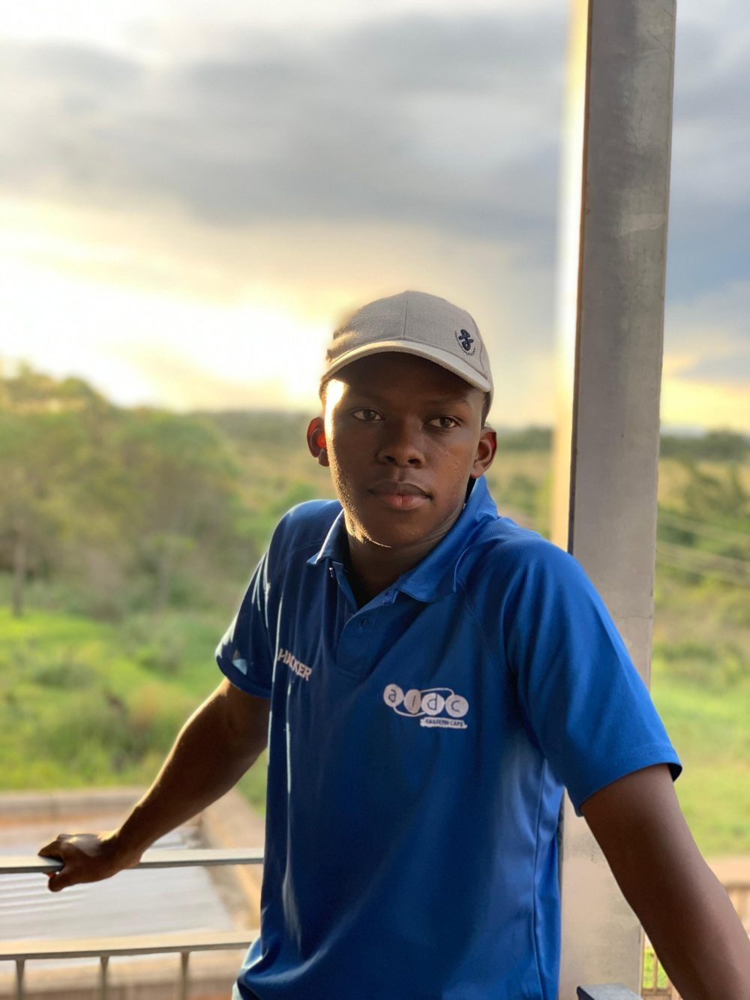
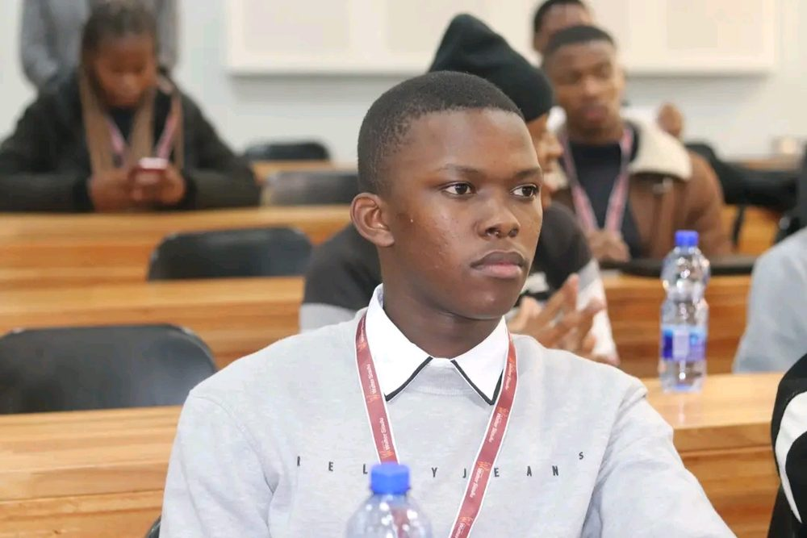
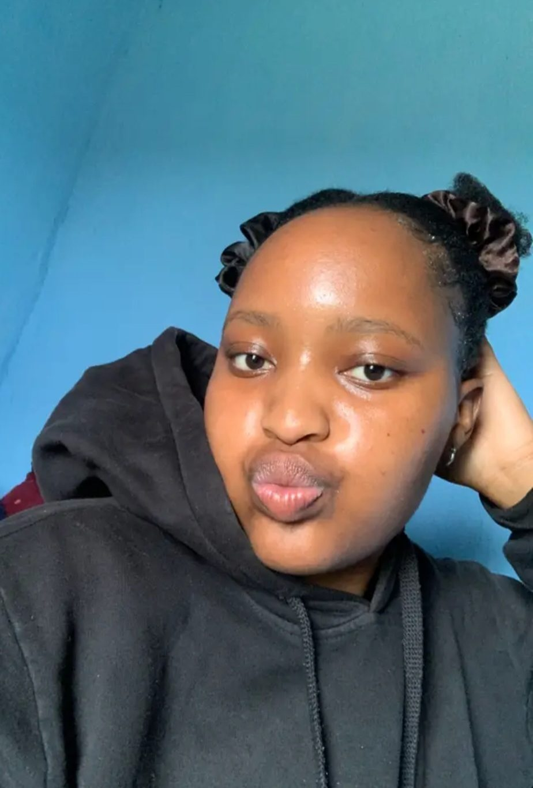
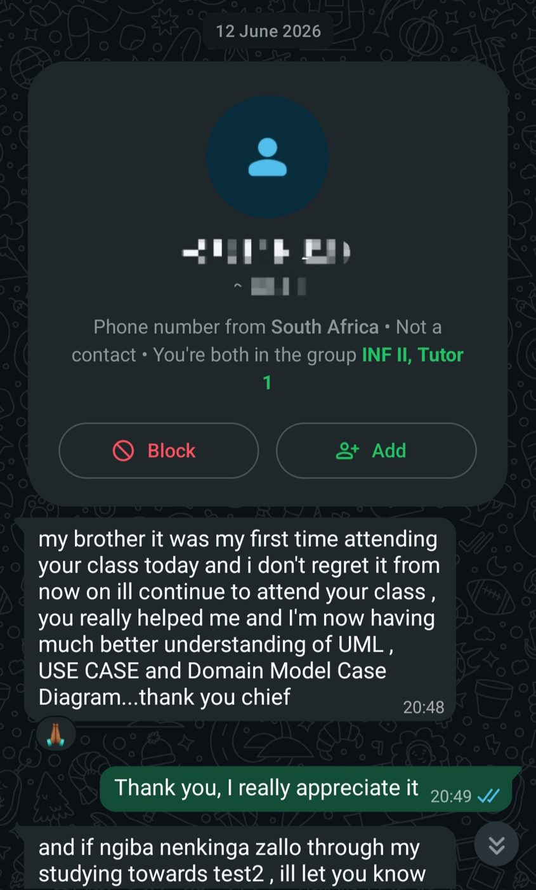

Information Systems 2 · E-Portfolio
Makhaya Nqaba
Walter Sisulu University · 2026
- IS2 Tutor
- Diploma in ICT: Application Development
- Final year

Welcome to my e-portfolio. It documents my year as an Information Systems 2 tutor: what I did, what I learnt and where I still want to grow.
Tutoring has been more than helping students with content. It has built my confidence, communication, patience and respect for teaching.
- Module
- Information Systems 2
- Content
- Chapters 1–9
- Delivery
- Potsdam Campus and Teams
- Partner
- Zizile Jako
02 · Personal Statement
Who I am
I am a final-year Diploma in ICT (Application Development) student at Walter Sisulu University. My interest in technology drives me to look for chances to grow, and in 2026 that included becoming an IS2 tutor.

Why I became a tutor
I wanted to help other students while learning myself. I know how hard technical and theoretical content can feel, so I value clear explanations and patient support. Tutoring also let me build skills beyond the classroom: communication, confidence and teamwork.
My teaching philosophy
Students should understand concepts, not just memorise them.
Students learn differently, so I aim to explain clearly, help with exercises and encourage them to engage with the content.
My goals
- Improve my communication and presentation skills.
- Be more confident when addressing groups.
- Help students understand Information Systems 2.
- Keep developing professionally. Tutoring has also made lecturing something I might pursue one day.
03 · Module Details
About Information Systems 2
The module covers how information systems are investigated, how user requirements are identified, and how systems are modelled and designed.
I supported Chapters 1–9 of Systems Analysis and Design in a Changing World, 7th edition, by Satzinger, Jackson and Burd.
- Ch 1An Overview of Systems Analysis and Design
- Ch 2Investigating System Requirements
- Ch 3Identifying User Stories and Use Cases
- Ch 4Domain Modelling
- Ch 5Use Case Modelling
- Ch 6Foundations for Systems Design
- Ch 7Defining the System Architecture
- Ch 8Designing the User Interface
- Ch 9Designing the Database
My lecturer
Dr Memory Ranga
Senior Lecturer · Walter Sisulu University
Dr Ranga is my IS2 lecturer and guided me through this year. I supported her with test invigilation and with marking under her supervision.
My responsibilities
- Explaining module topics and helping with exercises.
- Invigilating tests.
- Marking under the lecturer's supervision.
04 · Training & Development
Learning as I went
My development came from formal training, online learning and working with other tutors.
Tutor training
Title and date to be confirmed.
Tutor training
18 August 2026, 08:30
Potsdam Campus
Online register training
Implementing an online register. Title and date to be confirmed.
Beyond the sessions, I learnt from fellow tutors by sharing experiences and watching different approaches. Applying what I learnt showed me how much preparation, clear communication and confidence matter.
Skills I built
- Communication
- Teamwork
- Organisation
- Presentation
- Reflection
Invitations, attendance records and notes from the training sessions.
05 · Tutorial Delivery
How I supported students
I supported IS2 students through Chapters 1–9, explaining topics, helping with exercises and building their understanding of the module.
Potsdam Campus
Venues depended on availability.
Microsoft Teams
Used for online tutorials.
I try to connect theory with practical examples. For instance, in user stories and use cases it helps to separate a user's goal from the system activity that fulfils it. In interface design, students need to see how design decisions change the way people use a system.
Leading alone and together
I led some tutorials on my own and delivered others with my tutor partner. Leading built my confidence in presenting to a group. Sharing sessions taught me about preparation, communication and teamwork.

Zizile Jako
My tutor partner · Advanced Diploma in ICT (Application Development)
Zizile is a humble person, and I could not have asked for a better partner. Working with her showed me the value of teamwork, mutual respect and sharing responsibility, and I learnt from someone who is balancing her own studies while helping others learn.
My growth
At the start of the year I struggled to explain concepts in front of an audience. I am now more comfortable with larger groups, though I still want to improve my articulation and how I organise my explanations.
Different students need different explanations.
That is the idea I want to keep working on, in person and online.
Tutorial notes, slides, exercise sheets or lesson plans I used.
06 · Integration of Technology
Digital tools I used
Technology supported my preparation, my tutorials and my communication with students.
PowerPoint and Word
For organising my academic work and presenting information in a way that is easier to follow.
Microsoft Teams
For online tutorials, so I could support students remotely when sessions were not at Potsdam Campus.
For staying in touch with students and sometimes receiving their feedback.
Using both in-person and online approaches taught me to support students through different channels. Online platforms extend learning, and in-person sessions give another way to explain and help.
Next, I want to get better at organising tutoring activities and making learning resources easy to reach.
PowerPoint slides, Word documents and Teams screenshots.
07 · Reflections & Lessons Learnt
From nervous to more confident
At the start of the year I was afraid of speaking in front of an audience. Tutoring has shown me that confidence grows through experience, if I keep putting myself in situations where I can learn.
Time management
As a final-year student, I had to plan carefully and not underestimate preparation time.
Low attendance
Empty seats could be discouraging. I cannot control attendance, so I focus on making my support useful and accessible.
Articulation
I want to explain ideas more clearly, organise my explanations better and handle questions from a group more comfortably.
What I have learnt
Knowing a subject and teaching it are not the same thing. A tutor must also communicate, listen, prepare and recognise when an explanation needs another approach.
I do not need to be a perfect tutor from the start, but I must stay willing to learn.
08 · Gallery / Evidence
My year in pictures
Photos of the people and places behind my tutoring year. Documents and screenshots will be added as I confirm them.
Evidence I am collecting
- Slides, notes and worksheets I prepared.
- Training invitations and attendance records.
- Microsoft Teams screenshots.
Anything that shows private details will have names and numbers removed first.
09 · Student Feedback
What students told me
I did not use polls or survey links. My feedback came from students themselves, spoken in class.
Spoken feedback in class
Students told me whether they understood the lesson or not. Some praised the tutorials. Others gave constructive criticism: they could see that I knew the content, but I was not always expressing it clearly.
I know the content, but I need to express it more clearly.
I take that comment seriously. It is the reason articulation and organising my explanations are the skills I am working on most.
Written feedback
Some students also messaged me on WhatsApp, both positive and negative. Several of them used disappearing messages, so those messages are gone and I cannot show them. This is the one message I still have.

A first-time attendee
After attending for the first time, this student said they understood UML, use case and domain model diagrams much better and would keep coming. The name and number are hidden.
My commitment
I want to stay open to feedback, good or bad, and keep improving how I explain things.
10 · Achievements & Professional Growth
Growth beyond the classroom
My biggest progress is confidence. I started the year nervous about addressing an audience and ended it more comfortable in front of a group.
I also took on responsibilities beyond explaining content, including invigilating tests and marking under my lecturer's supervision. Training and fellow tutors showed me how much collaboration, preparation and continuous development matter.
Skills I am developing
- Communication and presentation
- Explaining technical concepts
- Time management
- Teamwork
- Professionalism
- Reflection
Effect on my career goals
My main direction is still Application Development and ICT. Tutoring has opened up lecturing as a possible path, and made me think about how I could share what I learn in development with future students.
11 · Conclusion & Future Goals
Looking ahead
Being an IS2 tutor in 2026 has been an important part of my academic and personal growth.
It challenged me to communicate with more confidence, balance competing responsibilities and think about how people understand information. I still need to improve my articulation, my time management and my motivation when attendance is low, and I will treat those as chances to grow.
Next steps
- Finish my studies.
- Keep building my Application Development and ICT skills.
- Stay open to opportunities to share what I know.
Tutoring taught me that professional growth is not only technical. It is also communication, patience, responsibility and a willingness to learn. I am grateful for the opportunity.
Thank you for visiting my e-portfolio.